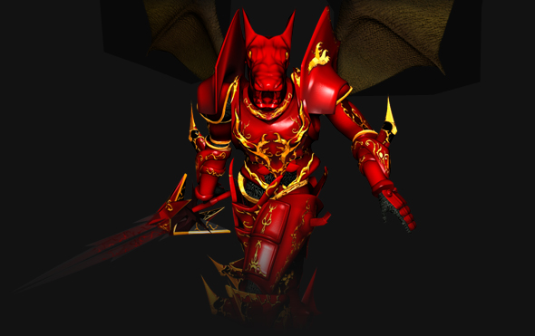

Dragon Knight
É o guerreiro do jogo. Utiliza a força e o combate corpo-a-corpo para derrotar seus adversários. O Dark Knight é preferido por muitos por ter uma defesa excelente e um dano alto, mas outros já preferem outras personagens porque o guerreiro não pode atacar à distância, uma vantagem às vezes necessária para se matar certos monstros. O Dark Knight se torna Blade Knight ao completar a missão que pode ser realizada ao se alcançar o nível 150, habilitando assim, o uso de certas armaduras e armas. Ao alcançar o nível 220, o guerreiro pode fazer 2 missões: a primeira faz com que a personagem ganhe 6 pontos por nível alcançado acima do 220, independentemente de se ter completado a quest mais adiante (se completramos no 230, por exemplo, ganharemos 10 pontos para distribuir, os quais perdemos durante a missão); e a segunda, mais cobiçada, habilita o "combo" no personagem. Esta habilidade concede um alto dano e uma maior facilidade de se vencer os adversários, além de ser a razão da escolha de muitos por este personagem.
Dark Wizard
É o mago do jogo. O Dark Wizard tem uma defesa muito boa e o char com mas defesa devido a uma magia o 'SOUL SHIELD'que depedendo da energia do dark wizard seu poder fica mas forte, e um ótimo poder de ataque, ataca os inimigos de uma distância mais longa. Após ter completado a missão, realizada no nível 150, o Dark Wizard torna-se um Soul Master, adquirindo algumas vantagens, como a de utilizar certas magias e equipamentos. Uma razão pela escolha de muitos pelo Mago é uma de suas magias, chamada "Evil Spirits", ou espíritos malígnos, que atinge os monstros que estão na tela do jogador, tornando possível o treinamento do personagem sem que alguém esteja realmente no computador. É o que as pessoas chamam no jogo de "ficar AFK, ou Away". Outra vantagem do mago é a de poder armas muitas estratégias em um duelo, como utilizar teletransporte, atingindo o inimigo e tornando-se difícil de atingir, algo que compensa a defesa inferior. Como todos os 3 personagens básicos, o DW/SM ganha 6 pontos ao completar a missão realizada no nível 220.
Elf

A Elf , ou elfa, é a única personagem feminina do jogo, tem algumas vantagens que as outras classes não têm, que são a de usar arco (ou besta) e flechas, podendo assim atacar à distância, com um dano relativamente bom. Além disso, a elfa tem uma ótima defesa, proveniente de sua armadura, de seus pontos de agilidade (os que devemos aumentar nessa personagem para ter um bom dano), ou de seu "buff", uma habilidade utilizada por elfas de energia que melhora o ataque e defesa das personagens, seja ela mesma ou os outros. Após ter a "Quest" completa, a Elf torna-se uma Muse Elf, as vantagens são de usar algumas armaduras e arcos, e também o grande sonho de todas as Elfs do jogo, ter o famoso "Ice Arrow", ou flecha de gelo, que tem o melhor dano desse "char" e congela os adversários, tornando-o imóvel durante alguns segundos.